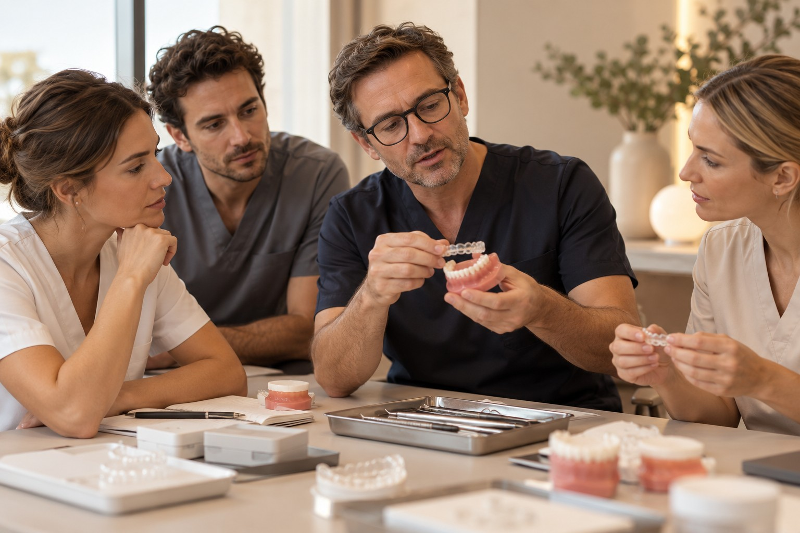

Les fondamentaux
Comprendre les principales étapes du parcours, les informations à réunir et les limites de son champ de compétence. Le programme est défini selon votre expérience.
Des repères communs. Une équipe mieux préparée.
Une activité d’aligneurs se construit aussi dans l’organisation du cabinet. Blanche vous aide à identifier les besoins de formation et à préparer un parcours adapté à votre expérience, avec des rôles clairs pour chaque membre de l’équipe.
Préparer mon projet ↗
Une formation structurée autour des étapes que votre cabinet devra organiser.
Comprendre les principales étapes du parcours, les informations à réunir et les limites de son champ de compétence. Le programme est défini selon votre expérience.
Organiser la collecte des éléments nécessaires, leur transmission et les échanges autour du plan. L’objectif est de construire une méthode de travail partagée.
Clarifier les rôles, préparer les rendez-vous et harmoniser les informations données aux patients. Le praticien garde les actes et décisions qui relèvent de sa responsabilité.
Les échanges peuvent s’appuyer sur des modèles, des exemples de dossiers et des supports de référence. Le contenu pratique, les intervenants et les modalités sont précisés dans votre programme, pour relier les notions à votre organisation quotidienne.
Votre expérience, les compétences de l’équipe et les besoins prioritaires.
Le programme, les participants et les objectifs pédagogiques.
Les séquences théoriques et pratiques prévues dans le programme.
Les questions de mise en œuvre et les besoins de soutien complémentaires.
La formation apporte des repères et une méthode ; elle ne remplace ni la qualification professionnelle ni l’évaluation des compétences du praticien. Durée, lieu, supports et éventuel suivi sont définis dans la proposition.
Un échange initial permet d’identifier vos besoins et de proposer un programme adapté. Les dossiers abordés doivent rester compatibles avec vos compétences.
Nous définissons les participants et les contenus selon leurs fonctions, dans le respect du rôle de chacun.
Aucune certification ou prise en charge n’est annoncée par défaut. Les éventuelles modalités sont précisées explicitement dans le programme proposé.
Parlons de votre expérience, de votre équipe et des sujets à aborder en priorité.
Préparer mon projet ↗Version de présentation : le bouton ouvre le mémo de projet sur la page d’accueil. Aucune demande n’est envoyée.